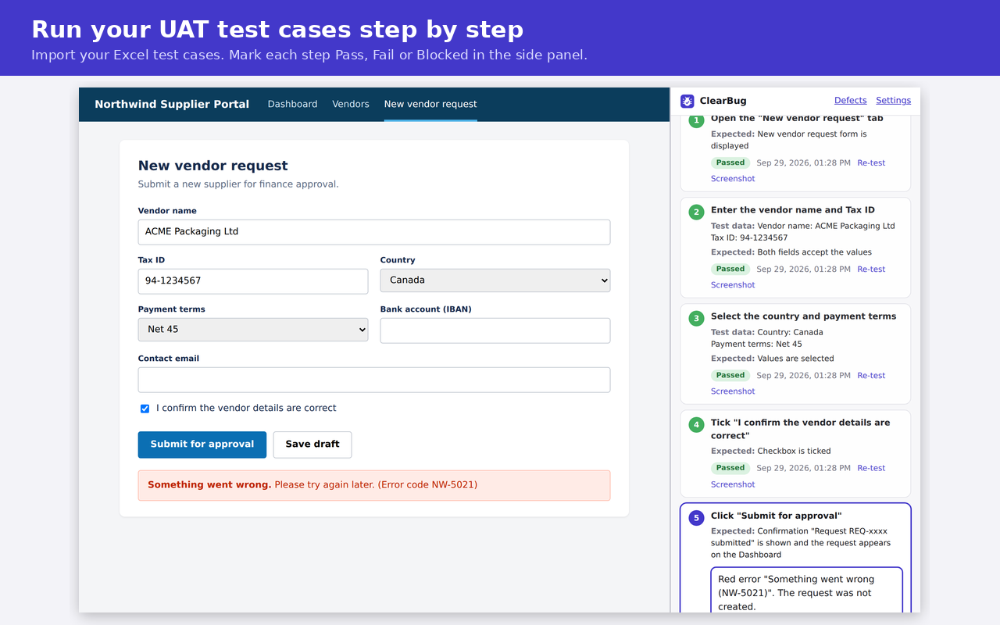

ClearBug – UAT Test Runner & Bug Reporter
A Chrome extension that lets testers run Excel test cases step by step, turn failed steps into clear bug reports with screenshots and page errors, and export results back to Excel.

Install (3 minutes)
- Download ClearBug.zip and unzip it. You get a folder called ClearBug.
- In Chrome, go to
chrome://extensions and turn on Developer mode (top right).
- Click Load unpacked and choose the unzipped ClearBug folder.
- Click the puzzle icon in Chrome's toolbar and pin ClearBug.
The Chrome Web Store version is in review. Once it is live, you can install it with one click instead.
Try it
- Open the practice site (a fictional supplier portal with two planted bugs).
- Click the ClearBug icon to open the side panel, then click Allow website access.
- Download the sample test cases and import them in the side panel.
- Open TC-001 and follow the steps. Mark each step Pass or Fail. Step 5 will fail: click Fail and write a bug report.
- Go back to the list and click Export results to Excel.
Source code
Privacy policy